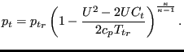
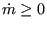
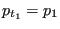

The weir crest is the upstream element of a pair of boundary elements simulating a weir. The corresponding downstream element is the weir slope. Both are illustrated in Figure 124. The weir can occur in different forms such as broad-crested weirs (left picture in the Figure) and sharp-crested weirs (right picture in the Figure). The volumetric flow  can be characterized by a law of the form
where C is a constant. For instance, in the formula by Poleni , where  is coefficient smaller than 1 to be measured experimentally [11]. The following constants have to be specified on the line beneath the *FLUID SECTION,TYPE=CHANNEL WEIR CREST card:
The cross section of the weir is supposed to be rectangular. This is important, since a different form leads to a different exponent in Equation 141. Notice that a weir can have upstream channel elements attached to it. In that case it is mandatory to specify an upstream reference element.
Example files: channel7.